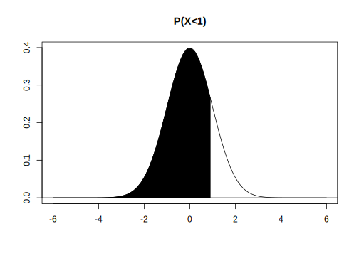

1.2 Continuous random variables: An example using the Normal distribution
We will now revisit the idea of a random variable using a continuous distribution. Imagine that you have a vector of reading time data \(y\) measured in milliseconds and coming from a Normal distribution. The probability density function (PDF) of the Normal distribution is defined as follows:
\[\begin{equation} Normal(y|\mu,\sigma)=f(y)= \frac{1}{\sqrt{2\pi \sigma^2}} \exp \left(-\frac{(y-\mu)^2}{2\sigma^2} \right) \end{equation}\]
Here, \(\mu\) is the true mean, and \(\sigma\) is the true standard deviation of the Normal distribution that the reading times have been sampled from.
We can visualize the Normal distribution for particular values of \(\mu\) and \(\sigma\), as a PDF (using dnorm), a CDF (using pnorm), and the inverse CDF (using qnorm). See Figure 1.4. It is clear from the figure that these are three different ways of looking at the same information.
FIGURE 1.4: The PDF, CDF, and inverse CDF for the \(Normal(\mu=0,\sigma=1)\).
As in the discrete example, the PDF, CDF, and inverse of the CDF allow us to ask questions like:
- What is the probability of observing values between \(a\) and \(b\) from a Normal distribution with mean \(\mu\) and standard deviation \(\sigma\)? We can compute the probability of the random variable lying between 1 and \(-\Infty\):
## [1] 0.8413## function for plotting area under curve:
plot.prob<-function(x,
x.min,
x.max,
prob,
mean,
sd,
gray.level,main){
plot(x,dnorm(x,mean,sd),
type = "l",xlab="",
ylab="",main=main)
abline(h = 0)
## shade X<x
x1 = seq(x.min, qnorm(prob), abs(prob)/5)
y1 = dnorm(x1, mean, sd)
polygon(c(x1, rev(x1)),
c(rep(0, length(x1)), rev(y1)),
col = gray.level)
}
shadenormal<-
function (prob=0.5,
gray1="black",
x.min=-6,
x.max=abs(x.min),
x = seq(x.min, x.max, 0.01),
mean=0,
sd=1,main="P(X<0)")
{
plot.prob(x=x,x.min=x.min,x.max=x.max,
prob=prob,
mean=mean,sd=sd,
gray.level=gray1,main=main)
}
Notice here that the probability of any point value in a PDF is always 0. This is because the probability in a continuous probability distribution is the area under the curve, and the area at any point on the x-axis is always 0. The implication here is that we can only ask about probabilities between two different points; e.g., the probability that \(Y\) lies between \(a\) and \(b\), or \(P(a<Y<b)\). Also, notice that \(P(a<Y<b)\) and \(P(a\leq Y\leq b)\) will be the same probability, because of the fact that \(P(Y=a)\) or \(P(Y=b)\) both equal 0.
- What is the quantile \(q\) such that the probability is \(p\) of observing that value \(q\) or something less (or more) than it? For example, we can work out the quantile \(q\) such that the probability of observing \(q\) or something less than it is 0.975, in the Normal(500,100) distribution. Formally, we would write this as \(P(Y<a)\).
## [1] 696The above output says that the probability that the random variable is less than \(q=695\) is 97.5%.
- Generating simulated data. Given a vector of \(n\) independent and identically distributed data \(y\), i.e., given that each data point is being generated independently from \(Y \sim Normal(\mu,\sigma)\) for some values of the parameters, the maximum likelihood estimates for the expectation and variance are
\[\begin{equation} \bar{y} = \frac{\sum_{i=1}^n y_i}{n} \end{equation}\]
\[\begin{equation} Var(y) = \frac{\sum_{i=1}^n (y_i- \bar{y})^2}{n} \end{equation}\]
For example, you could generate \(10\) data points using the rnorm function, and then compute the mean and variance from the simulated data:
## [1] 482.2## [1] 13365Again, depending on the sample size, the sample mean and sample variance may or may not be close to the true values of the respective parameters, despite the fact that these are maximum likelihood estimates.
This completes our informal discussion of random variable theory. We now summarize what we have learnt so far.